Electric phenomena occur as a response of the dielectric material under the influence of an electric field at different frequencies such as polarization and relaxation processes. They establish the dielectric properties which can be used to characterize the material properties, for instance moisture content, bulk density, bio-content and chemical concentration. The relationship between them plays an important role for research and application in food science, medicine, biology, agriculture, chemistry, electric devices, defence industry, engineering. One important reason for the interest in dielectric responses of rocks lies in the investigation of their physical properties in a non-destructive manner at a considerable lower cost. They are used in the petroleum industry to estimate reservoir parameters which are important to study the reservoir formation, evaluate zones for hydrocarbon reserves and oil recovery projects.
Permittivity is a property of the dielectric material which measures the ability of the material to be polarized by an electric field. In a static state, it is defined as
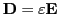
where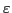
is the permittivity,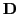
and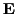
are the electric flux density and electric field, respectively. This equation holds for linear, homogeneous and isotropic materials. For anisotropic materials, the permittivity becomes a second rank tensor. When the material consists of dielectric and conductivity compounds, and an alternating electric field is applied, and are not in phase. Then, the permittivity is defined as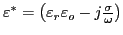
and it is called complex permittivity. There are several ways to calculate the effective permittivity of the medium, which are: total current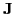
and the phase difference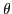
, Gauss' law, energy balance and using average values of the electric displacement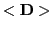
and the electric field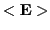
. Also, it is necessary to calculate the distribution of the potentials in the medium by using the continuity equation for the current density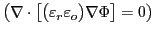
.This research is focused on the influence of the shape grain on the permittivity at different frequencies using 3D granular models, 3D images of porous materials, mixing law and Finite Element Method. The finite element is represented by a voxel with 8 nodes, one in each corner. In each node an electrical potential is applied, then the approximation of the potential (
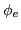
) within an element is determined by the tri-linear interpolation and interrelates the potential distribution in various elements such that the potential is continuous across interelement boundaries. The interpolation scheme involves 26 neighbours and the interpolated potential is expressed as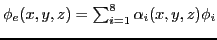
, where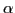
is the interpolation function. The electric field in the voxel is obtained by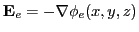
. The function of energy corresponding to the equation of current density is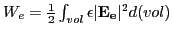
. When the process of assembling over all elements of the material is carried out, the total energy is given by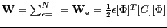
, where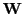
with respect to each node value of the potential be zero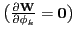
.A system of equations
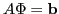
is generated by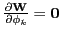
, where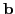
, which denotes the boundary conditions. This system is solved in order to minimise the potential and to calculate the total energy. Dirichlet boundary conditions are used on the bottom and top of the 3D image and Neumann boundary conditions on the other faces of the image. The boundary conditions are represented by voltage which causes an electric field across of the image. When an static field is applied, the matrixThe general procedure to calculate an effective permittivity from a image is as follows: apply the voltage, calculate the local and global stiffness matrices, solve the equations system and then the property can be calculated by methods mentioned above. The dielectric constant of the material within each voxel is known and local potentials are already calculated after solving the system of equations. Then, the local electric field and local electric flux density can be calculated as well. The last step was to use the average values of and where the effective permittivity is given by
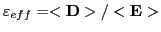
. Following this procedure, the numerical results fit well with mixing laws for samples (a cube with a sphere at its center) in different sizes to 80 Voxels and in a static field. The system of equations was solved using the algorithms BICG, GMRES, QMR and TFQMR. We are working on using these algorithms to solve a system of complex equations which represents the main difficulty. We need to utilize precondition and domain decomposition techniques in order to increase the size of the image that is usually between 2000 and 3000 voxels. Thus, research of the effective permittivity of the material would become more useful and interesting.